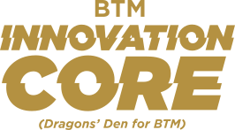

ITMSA and Business Career Hub is excited to introduce the launch of the BTM Innovation Core (BIC). BTM Innovation Core will be a program designed to engage junior students to co-develop innovative solutions for a diverse portfolio of high impact projects.
How It Works
Step 1
Form a team or work as an individual.
Step 2
Develop creative solutions for projects.
Step 3
Pitch your ideas to the BIC Committee.
Step 4
Once your idea is approved, your idea becomes reality!
Benjamin Copeman
Director of Campus Outreach

Iftikhar Choudhary
Co-Vice President of Corporate Relations

Ronit Patel
Vice President of Events

Saba Cheema
Executive Vice President

Saljoq Khurshid
President

Benefits
Personal Development
Missed your chance to join ITMSA? BIC will provide you with a low commitment role where you still get to work directly with ITMSA, and have the opportunity to add ITMSA to your resume.
Professional Development Workshops
Guest speakers will be hosting a variety of professional development workshops to equip you with the skills to succeed both within the classroom and outside of it.
Skill Improvement
Develop your personal skills, such as project management, problem solving, interpersonal, presentation and public-speaking skills.
Idea Implementation
Your solutions will be implemented by ITMSA and will fund and support select ideas that meet our feasibility requirements.
Become a Member
As a member of BIC, you will receive the opportunity to work in a self-organized project team and pitch your solutions related to student engagement to a committee of ITMSA Executives on a weekly basis. Your solutions will be assessed, funded, and implemented by ITMSA.
Apply as a team or an individual member of the BTM Innovation Core (BIC).
Applications close February 29th.